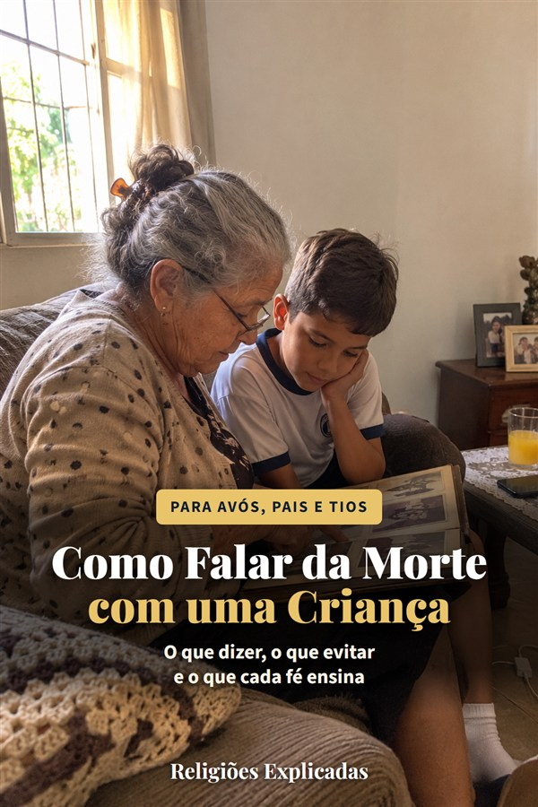

“Vovô vai voltar?” O que dizer?
A criança pequena entende tudo ao pé da letra. Por isso as frases mais carinhosas costumam ser as que mais confundem.
Ele foi dormir.
Pode dar medo de ir para a cama, ou fazer a criança esperar que ele acorde.
Ela viajou.
Quem viaja volta, e a criança vai perguntar quando.
Virou estrelinha.
Bonito para o adulto, mas pode soar como promessa de volta.
Ele morreu.
A palavra clara, dita com calma e carinho, é a que a Sociedade Brasileira de Pediatria orienta.

Livreto da Helena DuarteComo Falar da Morte com uma CriançaO que a criança entende em cada idade, as frases que ajudam e as que confundem, levar ou não ao velório, o que cada religião costuma dizer às crianças e os sinais de que ela precisa de ajuda profissional. Cada orientação com a fonte.
O livreto é opcional e custa R$ 9,90 à parte: você pode acrescentá-lo na tela de pagamento do guia.
Guia R$ 27,90 + livreto R$ 9,90 = R$ 37,80 no total. Ver o que vem no guia